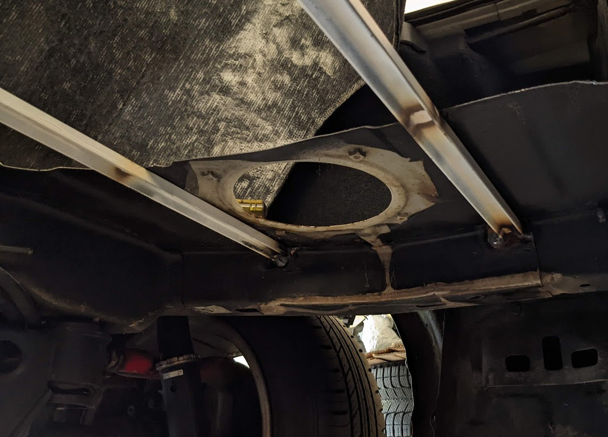

Rear Battery Box
The rear battery box assembly holds twice as many batteries as the front box. An entire 2’x4' sheet of 20 gauge steel was used as the base.
The rear battery box was assembled after learning a lot of lessons from the front box assembly. 0.5" square tube was used to provide structural support while clamping the sheet steel in place during the welding process.
The square tube was bolted into place with M8 screws to support the sheet metal during the welding process.
The spare tire well made a sudden departure and the battery box filled the void where it once lived.
When pushed up as far as it can go, the rear battery box does not protrude too far from underneath the car.
Trunk Reinforcements
When the spare tire well was removed, the sheet metal in the trunk of the car became floppy and poorly supported. There was a pile of 0.5"x1" steel U channel in the bargain bin at the metals shop, so two lengths of that was used to reinforce the trunk.
The steel was painted, and then sanded along with the body steel at the welding points, then the U channels were welded into place.

Rear Battery Mounting
The rear battery will weigh approximately 260 lbs, which is a bit more than the ~120 lbs weight of a full fuel tank. The fuel tank mounted to the chassis using two straps which were fastened to the underbody with M10 bolts. The rear battery assembly will be bolted to the frame rail with 3 steel straps.
The straps were modelled in blender to calculate the required angles.
The straps were bent, reinforced with welds, and assembled onto the battery assembly with four M8 bolts each. The M8 bolt heads are sunk into the 0.5" square tube as to not interfere with the brackets that hold the battery cells in place.
Brackets
The rear-most strap mounting points were fabricated first. The frame rails already had three M8 tapped holes on each side of the car. The hole set on the left side of the car were used to attach an exhaust hanger bracket. This bracket was pretty thin and crusty, so a new bracket was made out of zinc plated steel.
JIS M12 flange nuts were welded to each of the rear brackets. The zinc coatings on both the steel and the nuts outgassed while welding. I rarely pick up the welding torch without putting on a HEPA filter mask now.
By this point, the battery box sheet steel started getting surface rust, so the metal was primed and reassembled. A polycarbonate lid was cut to size and holes were drilled and tapped to mount it to the battery box.
The battery assembly was lifted into position with a motorcycle jack and held in place with some aluminum TIG welding rod. Neoprene foam will eventually be used as a vibration dampener between the battery box lid and the trunk reinforcements.
The rear battery strap was modified to mate to the rear brackets and reinforced.
The front strap was fabricated next. The frame rails already have two M8 holes on the left side and an M10 hole on the right. The front strap fastened to all three holes.
The front and rear straps were attached to the battery assembly, and the assembly was bolted into place in preparation for fabricating the middle strap brackets.
There are no existing bolt holes near where the middle strap needs to mount, so holes for M10 bolts were drilled through the frame rails to support brackets on both sides of the car. The wall thickness of the frame rails is nearly 1/4" at these locations, but a steel tube will be welded into the rail to prevent any chance of over-compression.
The rear battery protrudes a bit, but it is level the bottom of the differential.